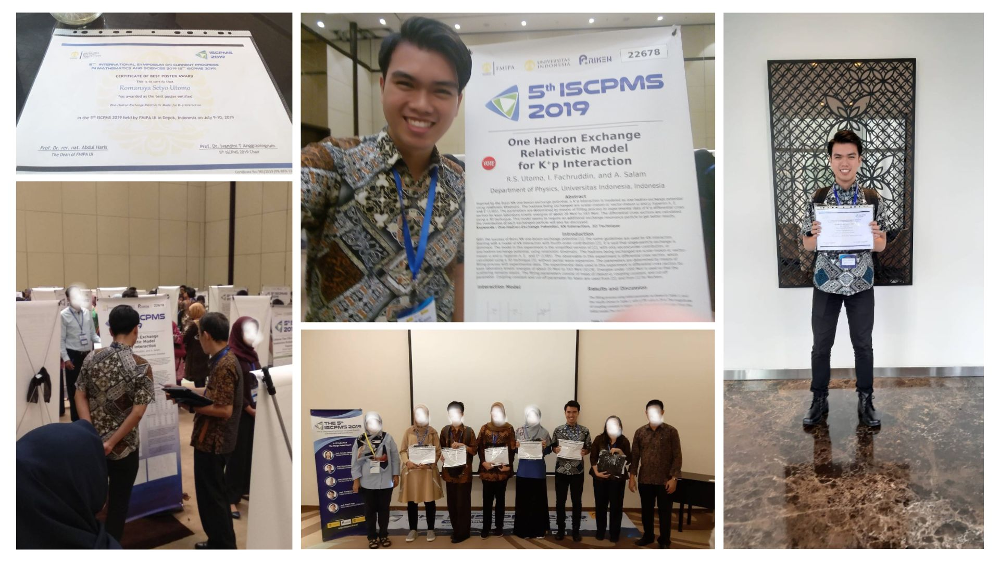
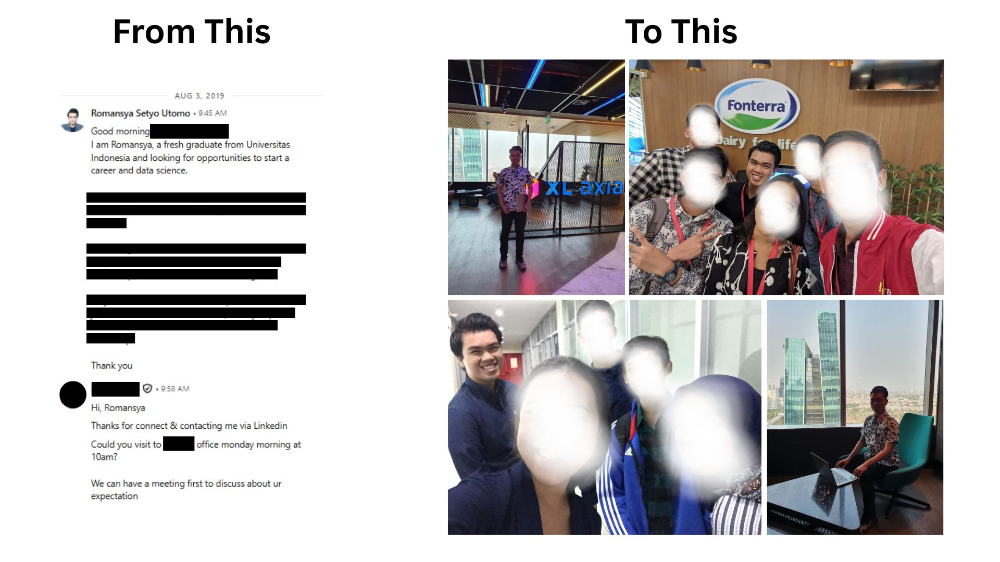

Psst, genZ, click the card! 🤫
Part 1 (Academic): Thesis focus on Econophysics was aborted as the supervising professor had not engaged with the topic for over ten years, requiring a definitive shift to a new area for the final degree.
Part 2 (Career Catalyst): A discussion comparing Econophysics to solving business problems led to the realization that the methodology had similarity with Data Science. Immediately initiated self-directed training, tackling Python and foundational SQL, though SQL proved an initial challenge.
Successfully completed the degree requirements with the new specialization. Research was recognized with a prestigious award at an international conference, marking the formal conclusion of the academic chapter.
Secured first Data Science internship by leveraging direct outreach and LinkedIn networking, resulting in a direct reply from the startup CEO. Used the internship to aggressively master SQL and Python application, and quickly acquire proficiency in Power BI.
